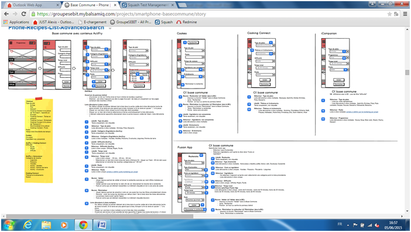
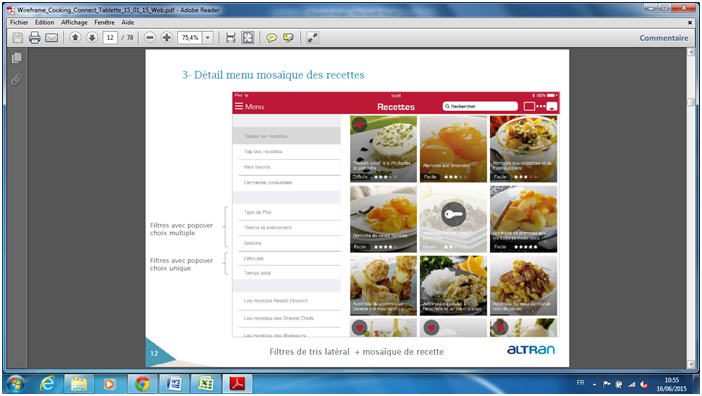
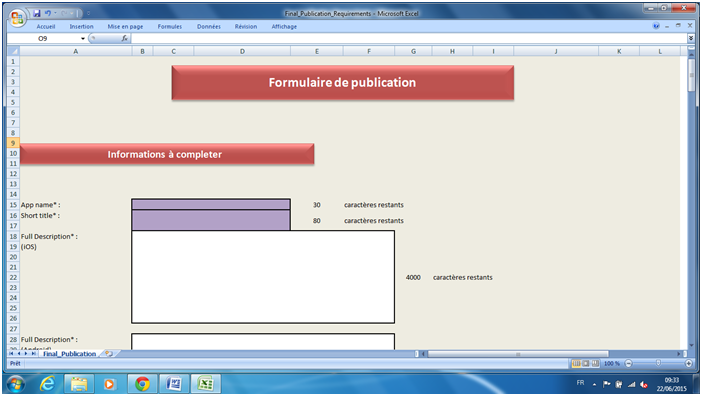
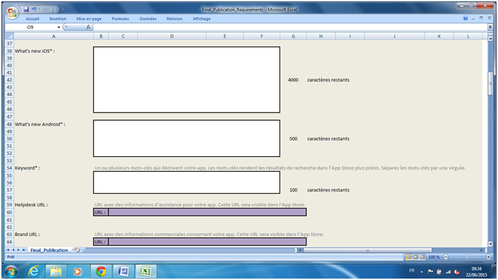
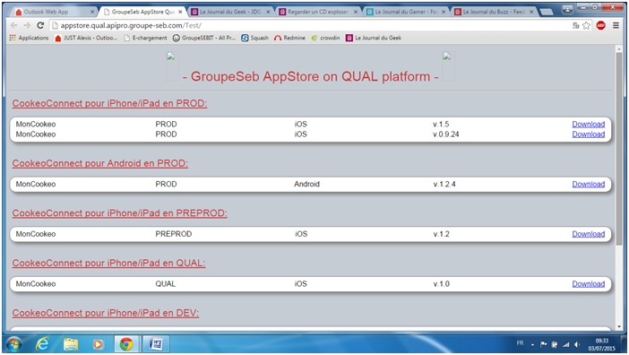

Stage de première année_
Mon stage de première année s'est déroulé chez SEB, entreprise spécialisée dans le petit équipement éléctroménager.
Qu'est ce que SEB ?
SEB est devenue une marque emblématique en France, notamment grâce à la Cocotte Minute. Les produits de la marque continuent d’accompagner les évolutions de la cuisine française quotidienne.
Développant des appareils domestiques connectés, des applications mobiles sont nécessaires. Le but de mon stage a donc été de tester ces applications mobiles et de faire remonter les problèmes potentiels.
Afin de mener à bien cette tâche, je me suis fixé différents objectifs. Je devais déja me renseigner sur les différents modules des applications grâce au logiciel "Balsamiq". Une fois ceci effectuée, je devais suivre une "trame" de test à effectuer. Ces trames étaient précisées sur "Squash Test Managment".

SEB est devenue une marque emblématique en France, notamment grâce à la Cocotte Minute. Les produits de la marque continuent d’accompagner les évolutions de la cuisine française quotidienne.
Développant des appareils domestiques connectés, des applications mobiles sont nécessaires. Le but de mon stage a donc été de tester ces applications mobiles et de faire remonter les problèmes potentiels.
Afin de mener à bien cette tâche, je me suis fixé différents objectifs. Je devais déja me renseigner sur les différents modules des applications grâce au logiciel "Balsamiq". Une fois ceci effectuée, je devais suivre une "trame" de test à effectuer. Ces trames étaient précisées sur "Squash Test Managment".

Une fois un problème repéré, l'utilisation de "Redmine" permettait la création d'un ticket décrivant le problème en question. Un autre objectif consistait à vérifier les Wireframes (Aspect graphique de l'application) grâce à un PowerPoint mis à ma disposition.

Ensuite, il m'était demandé de créer un formulaire de publication de l'application, qui permet d'afficher toutes les caractéristiques de l'application.


Je devais également créer un formulaire récapitulant les traductions des applications.
Enfin, la dernière tâche a été de créer un 'Store interne' afin de télécharger les applications sans avoir besoin de passer par l'App Store ou le Play Store.
